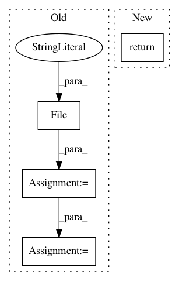

261d057ac69e0e731e747918406c9f395a91cc12,workers/data_refinery_workers/downloaders/test_sra.py,DownloadSraTestCase,insert_objects,#DownloadSraTestCase#,23
Before Change
)
batch.save()
file = File(size_in_bytes=0,
download_url="ftp://ftp.sra.ebi.ac.uk/vol1/fastq/DRR002/DRR002116/DRR002116_1.fastq.gz", // noqa
raw_format="fastq.gz",
processed_format="tar.gz",
name="DRR002116_1.fastq.gz",
internal_location="IlluminaHiSeq2000/SALMON",
batch=batch)
file2 = File(size_in_bytes=0,
download_url="ftp://ftp.sra.ebi.ac.uk/vol1/fastq/DRR002/DRR002116/DRR002116_2.fastq.gz", // noqa
raw_format="fastq.gz",
processed_format="tar.gz",
name="DRR002116_2.fastq.gz",
internal_location="IlluminaHiSeq2000/SALMON",
batch=batch)
file.save()
file2.save()
batch.files = [file, file2]
return (batch, [file, file2])
@patch("urllib.request.urlopen")
def test_download_file(self, mock_urlopen):
After Change
self.survey_job = survey_job
def insert_objects(self):
return
def test_download_file(self):
dlj = DownloaderJob()
In pattern: SUPERPATTERN
Frequency: 3
Non-data size: 4
Instances
Project Name: AlexsLemonade/refinebio
Commit Name: 261d057ac69e0e731e747918406c9f395a91cc12
Time: 2018-03-26
Author: rich@anomos.info
File Name: workers/data_refinery_workers/downloaders/test_sra.py
Class Name: DownloadSraTestCase
Method Name: insert_objects
Project Name: facebookresearch/ParlAI
Commit Name: 5028a88c95ba23841b9ff921ff767c9f5433107c
Time: 2018-05-23
Author: kshuster@fb.com
File Name: parlai/core/image_featurizers.py
Class Name: ImageLoader
Method Name: load
Project Name: pyannote/pyannote-audio
Commit Name: 492ab3938973c77667f641d0a284532c1ecc8727
Time: 2017-12-15
Author: bredin@limsi.fr
File Name: pyannote/audio/features/utils.py
Class Name: Precomputed
Method Name: __call__